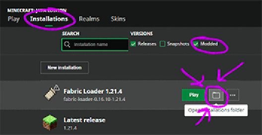

About Mizzcraft
Mizzcraft is a chill vanilla Minecraft server hosted by the Mizzcord, a community centered around the singer, filmaker,
and ex-fishtank contestant Mizzy!
Java Edition
mizzcord.com
Server Map
Explore our world and discover builds!
Server Map
Join Our Discord
Chat with Mizzy fans and stay updated!
Join Discord
Mod Installation Guide
Server is on Minecraft 26.2 (Fabric). Client must match.
Download these:
Java 25 (Temurin JRE) 26.2 and the Iris installer. Use Java 25+ (21 is too old for this version).
Iris Installer 3.3.0 26.2 (Iris 1.11.2, Sodium 0.9.1).
BSL Classic v10.0
Simple Voice Chat 2.6.21+26.2
How to Install:
Install Java , then run the Iris Installer . Choose Minecraft 26.2 and the Iris + Fabric option (not Quilt).
Open the Minecraft Launcher → Installations → for the new Fabric/Iris profile click Folder / Open Installation Folder .
Show Example

Drop BSL_v10.0.zip into the shaderpacks folder (create the folder if needed).
Drop voicechat-fabric-2.6.21+26.2.jar into the mods folder (alongside Iris/Sodium/Fabric API).
Important: Launch with the Fabric / Iris 26.2 installation in the launcher dropdown — not vanilla.Join address: mizzcord.com
Alternative Easy Installer
New to MC? Don't want to install mods manually?
Download and install
CurseForge App
Open the app and click "Minecraft" as your active game.
Search Mizzcraft , install the pack built for 26.2 .
Click play! Server list should include mizzcord.com .
(Shaders are off by default — enable BSL in video settings / shader packs if you want them.)